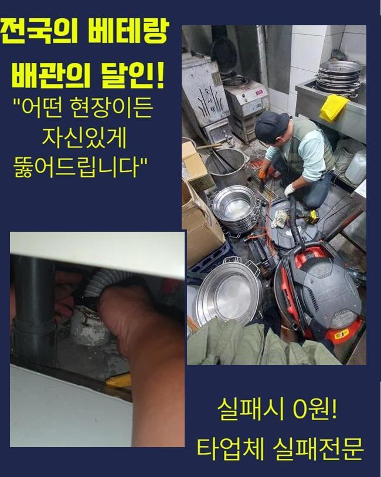
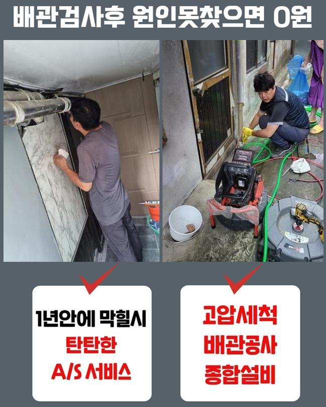
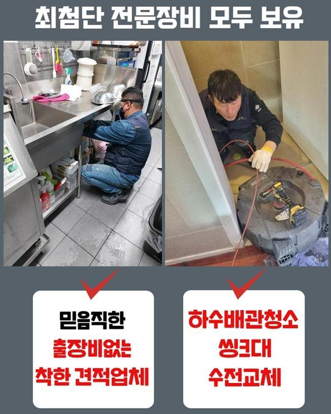
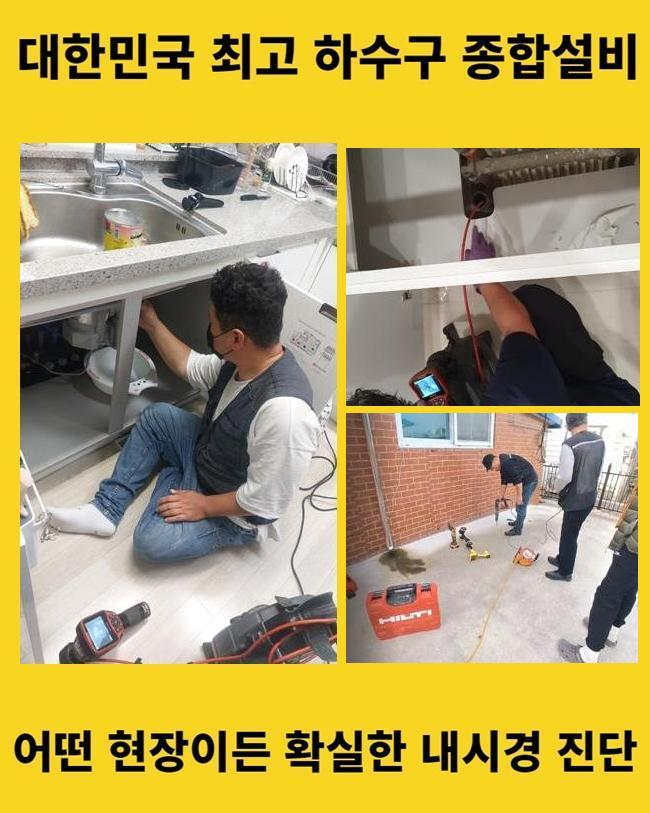
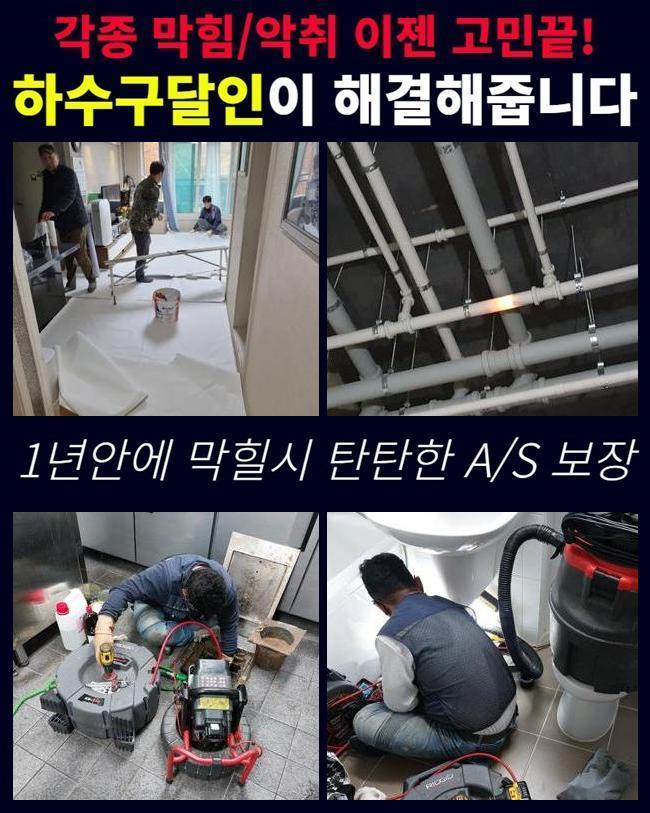
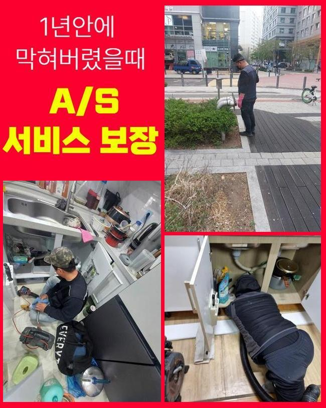
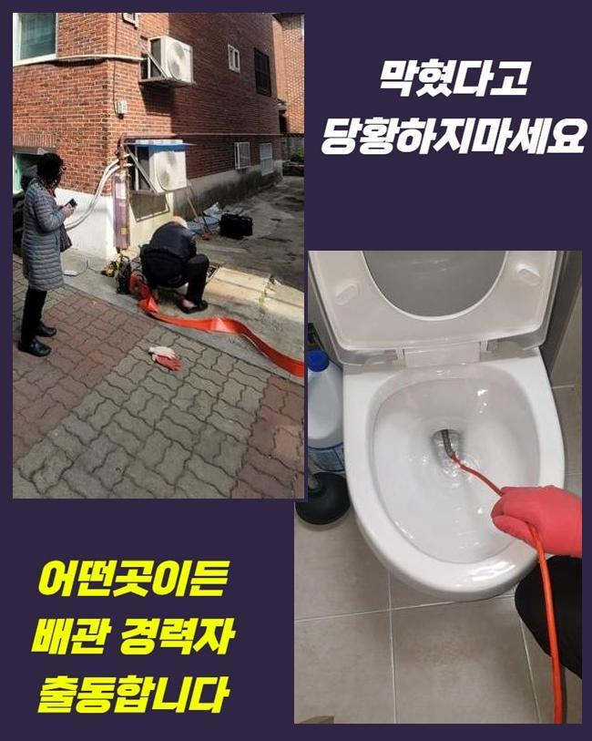

🏠 성남 금광동씽크대뚫음 은행동 하수구뚫는업체 출장설비
성남 싱크대막힘 전문 시공 후기

📋 작업 개요
- 위치: 성남
- 서비스 유형: 싱크대막힘, 하수구막힘, 배관막힘, 누수수리, 역류해결, 뚫는업체, 배관청소, 고압세척
- 작업 일시: 2025. 5. 16. 21:55
- 업체명: 하수구수사대 (010-5615-2118)
🔍 문제 상황
성남 금광동씽크대뚫음 은행동 하수구뚫는업체 출장설비
여러분집에 배치된 부엌 씽크대는 알맞게 관리를 하시는지요
어떤 건물이라 해도 배수관이 필수로 배치되어 있는데 정확하게 점검하고 청소해주는 곳들이 별로 없을거에요
이러다보면 점점 막힘증세가 나타나기 시작하며 물이 빠지는것에 불편함들이 발현되어야지만 그제서야 관심들을 가질겁니다
최근에는 싱크대를 청소하는 과정들을 인터넷검색을 통해 찾아보실수 있기에 염려거리로 이어지기전에 관리해줘야 겠죠
혹여나 막히는 문제들이 심화되어 직접적으로 씽크대청소가 어렵다고 한다면 전문업체로 문의하여 처리할수 있습니다
오늘 공개할 수리현장은 상가에서 막히는 현상들이 발생하신 사례입니다
씽크대 막힘사태로 전화주신 현장에 방문하니 하부장밑에서 역류하는 모습이 보였죠
찌꺼기도 일부분 흘러나온 상황인것을 두눈으로도 살필수 있었죠
알고계셔야 하는 부분은 싱크대밑에는 방수코팅이 이루어져있지 않습니다
역류증세가 발생되서 하부장쪽에 오수가 고이게된 현상이 지체된다면 누수문제가 발생될수 있죠

🔎 원인 분석
💡 전문가 진단: 정밀 진단 장비를 사용하여 슬러지의 고착 여부를 판명하고 타격/세척 작업을 실시했습니다.
그렇게 되면 밑에층에 관련된 보상부분이 이루어지므로 사태가 갈수록 확대되죠
금일 현장장소의 배관내부 상황들을 알아보고자 배관카메라를 투입했어요
투입전에 배관안쪽에 하수들이 잔존되어 있었으므로 석션도구를 첫째로 사용했습니다
석션장비는 하수를 흡입하여 외부로 뺄수있어 고인물이나 슬러지를 제거할수 있습니다
배관내부를 확인하기위해 배관통수를 진행했지만 오수는 상당량으로 배출되었고 찌꺼기들은 발견되지 않았습니다
배관내에 들어찬 물들을 없애고 배관내시경을 삽입했습니다
하수도내부를 점검해보고자 투입한건데 이물질로 인하여 안쪽상태가 정상적으로 확인되지 못했어요
통로쪽에 슬러지만 보이는 상태였고 씽크대막힘을 타개하려면 전체적으로 하수구청소가 필요했는데요
오염물 자체가 많았기 때문에 내시경과 각종 장비를 병행하여 배관뚫음을 시작하기로 했죠
투입해놓은 장비와 연결된 노즐부분을 꺼내보니 노즐끝쪽에 퀘퀘한 냄새로 이루어진 슬러지가 접착되서 빠져빠져나왔답니다!!
하수구가 심각하게 오염되어 버렸다면 설명드린것과 같이 기계일부에 묻게되는 이물이 많죠

🔧 작업 과정
저흰 어떠한 방법으로 진행해낼지 생각해 보다가 플렉스샤프트를 세팅했어요
기름기로 쌓인 오염물은 싱크대에서 발생되는 기름들이 배관안에 쌓이게 되면서 점성을 이룬 형태로 배관벽쪽에 붙어서 떨어지지 않고 음식물잔해와 결합되면서 석회화되는 특징으로 이루어져 있습니다
거기에 더해서 관로안에 머물며 부패하고 냄새도 심각해지므로 소거시키는 방식말고는 해결하기가 어렵습니다
배관내부에 잔존된 이물을 제거해내기 위하여 분쇄장비를 선택하였고 먼저 입자들을 잘게 조각내는것을 목표로해서 세척작업에 들어갔죠
잔해물이 많은 곳이다보니 천천히 아래쪽으로 내려가며 싱크대세척에 들어갔답니다
현재단계를 진행할때는 카메라장비로 확인해가면서 잔해물이 발견되는 곳을 집중하여 처리하는 과정으로 진행해볼수 있었답니다
분쇄장비만을 활용해서 정확하게 전체작업을 진행할수는 없어요
석회를 분해하고 입자가 모일때 수시로 석션기계를 이용하여 찌꺼기들을 외부쪽으로 꺼내야 하는데요
중간중간에 석션기로 잔여물을 흡입하지 못한다면 조각난 입자가 지속적으로 쌓이면서 아래쪽에 하수관이나 메인관이 막혀버리게될 확률이 높아요
분쇄작업으로 고착물이 작아졌다해도 끈적함은 잔존되기에 시간흐르면 똑같은 문제들을 일으킬수있어 확실하게 소거하는게 중요해요
모니터로 하수구내부 상황이 점차 깔끔해지는게 나타나게 되었답니다
전과는달리 관로형태는 깔끔하게 나타났답니다
잔해물질이 제거되며 대체적으로 배관속 상태자체가 좋아져서 배수가 원활하게 진행되었죠
전체적인 구간들을 체크하면서 부족한곳은 없는지 살펴보았고 깨끗해진걸 파악한후 모든과정이 잘된것으로 확신해볼수 있었습니다
하수구안에 잔존되었던 잔해물들이 전부 석션장비의 통안팎에 담겨있었어요
성심성의껏 없앤 오염물이 재차 하수구속에 들어가게 된다면 재발현상이 발발할수 있기에 쓰레기봉투를 이용하여 처리하는것이 좋습니다
오수나 이물질을 걸러낸후 깔끔히 정리했습니다


✅ 작업 완료
작업을 마치기전에 배수테스트를 의뢰자분과 살펴보았죠
주름호스쪽을 기존대로 체결했으며 연결한뒤 싱크대볼에 받아놓았던 물들을 배수구에 흘려보내면서 점검해 보았죠
많았음에도 막히는 부분없이 흐르고 있었고 호스연결 또한 확실히 연결되어 정상적인 상태로 복구되었죠
배관과 연관된 문제들을 해결해 드리는 저희들은 해결을 요청하는 장소라면 신속하게 출동하여 도와드리도록 하겠습니다
이밖으로도 궁금한게 있다고 하신다면 언제라도 물어봐도 괜찮기에 편안하게 전화주시길 바래요




⚠️ 베란다 누수 및 방수 관리 방법
- ✅ 비가 많이 올 때 창틀 주변이나 아래층 천장에 얼룩이 생기는지 정기적으로 확인해 보세요.
- ✅ 우수관 주변 실리콘 마감이 들뜨거나 깨진 틈새가 있는지 손상 여부를 수시로 체크하세요.
- ✅ 베란다 바닥 타일의 줄눈(메지)이 소실되면 그 틈으로 물이 침투하여 누수가 유발됩니다.
- ✅ 누수 의심 증상 발견 시 방치하면 아래층 손실이 커지므로 즉시 전문가의 진단을 받으십시오.
💡 핵심 정리
- 확실한 장비 작업(내시경 점검 및 샤프트 스케일링)으로 원인을 뿌리 뽑습니다.
- 작업 후 1년 이내에 동일한 부위 재발 시 100% 무상 A/S 서비스를 보장합니다.
- 서울 · 경기 · 인천 전 지역에 24시간 언제든 긴급 출동할 수 있도록 항시 대기 중입니다.
❓ 자주 묻는 질문 (FAQ)
🚨 성남 싱크대막힘 문제로 고민이신가요?
정확한 원인 진단과 확실한 시공으로 재발 없는 해결을 약속드립니다.
24시간 긴급 출동 | 서울 · 경기 · 인천 전지역 | 1년 내 재발 시 무상 A/S